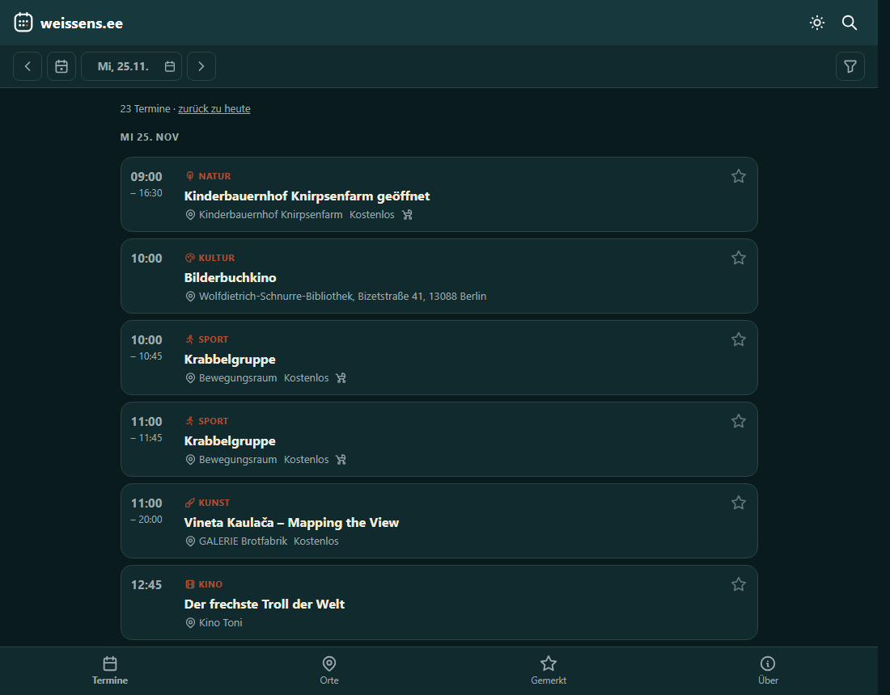

Features
Everything that's on, in one list
Organisers keep publishing where they always have. openLitfass picks their events up automatically and turns them into a calendar you actually want to use.
Many kinds of source
RSS, iCalendar, JSON APIs, WordPress calendar plugins and plain web pages without a feed – configured in JSON, no custom code.
Duplicates merged
The same event announced by several sources appears once. Cancelled events stay visible, clearly marked.
Filters that make sense
Day, weekend or week; categories and groups such as culture; attributes like free, family-friendly or ticket required.
Search with suggestions
Finds venues, categories and events across all dates, tolerant of accents and ß/ss.
Places and maps
A directory of venues with their upcoming events, map links to OpenStreetMap and calendar export as .ics.
Saved events
Star events straight from the list. Kept in the browser only – no sign-up, no account.
Installable web app
Works on phones, tablets and wide screens; installable as a PWA and usable offline with the last loaded events.
Easy to find
Optional static event pages with schema.org data, a sitemap and today's events already in the HTML.
How it works
From scattered announcements to one calendar
No database, no API server. A small Go program fetches, cleans and builds; what comes out is a set of static files any web server can serve.
Collect
fetch reads every configured source on a schedule (every six hours by default) and maps its fields to a common event format.
Clean up
Filters drop what doesn't belong, duplicates are merged and categories assigned. A failing source never wipes out the rest – the last good data is kept.
Publish
build-site writes the web app, event data and optional SEO pages. serve switches a new build live only once it is complete.
Event days
Talks, workshops, many slots
Not only for ongoing events: openLitfass also works for your own event days – a hackerspace's open day, a club congress, a barcamp, a festival or any occasion where talks are given.
- Bring the schedule as it isImport an iCalendar export from your planning tool, or add single talks by hand through the inbox.
- Rooms and tracksRooms become places, tracks become categories – filterable, searchable, each with its own icon.
- Several days side by sideWeekend and week views show the days in columns; talks in progress are highlighted.
- A personal timetableVisitors star the talks they want to see and add them to their own calendar.
Made for visitors
Respectful by design
- No tracking, no cookies, no accountsPreferences and saved events live in the visitor's own browser.
- Light and dark modeFollows the system setting or the visitor's choice.
- Today at a glanceEvents in progress are highlighted, finished ones fade out.
- Your lookEach instance brings its own colours, logo and texts through a small theme file.

Run your own
Your own calendar in five steps
The core lives in one repository; each calendar is an instance in a repository of its own that holds only configuration, sources and styling.
- Copy
example-instance/into a new, empty repository. - Fill in
instance.jsonand adapt the legal notice and privacy policy. - Add sources: copy a template in
sources/and adjust URL and field mapping. - Style it: override the design tokens in
site/css/theme.css, add your logo. - Start the container – it serves the site and keeps it up to date.
# one instance per container: serves on :8080, fetches every 6 hours
docker run -d --restart unless-stopped \
-v ./my-instance:/instance -p 8080:8080 \
ghcr.io/schreibtischhelden/openlitfassImages for amd64 and arm64. A health endpoint and Prometheus metrics are built in; GitHub Actions and GitHub Pages work too.
Setting up an instance →
Create an instance and run it with Docker or GitHub Actions.
Configuring sources →
Source types, field mapping, filters, fault tolerance.
Finding sources →
A playbook for discovering event sources in your area.
The user interface is currently available in German only.
In use
Instances
weissens.ee
Berlin-Weißensee: libraries, cinemas, galleries, a children's farm, sports clubs and more.
Get involved
openLitfass is free software. Report a bug, suggest an idea or a source type, or start a calendar of your own.